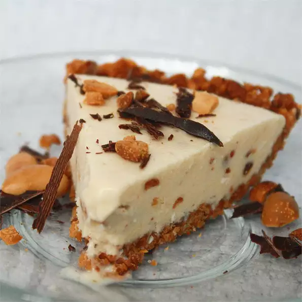

Peanutty Ice Cream Pie

Description
A great party pie! Top with M&Ms®, sprinkles, toasted coconut, or chocolate shavings before serving.
Ingredients
- 1 cup of finely chopped peanuts
- 3 tablespoons of margarine
- 2 tablespoons white sugar
- 1/4 cup of peanut butter
- 1/4 cup light corn syrup
- 1/4 cup flaked coconut
- 3 tablespoons chopped peanuts
- 1 quart vanilla ice cream, softened
- 1/4 cup mini candy-coated chocolate pieces (Optional)
Steps
- Combine the peanuts, butter and sugar; press onto the bottom and up the sides of a greased 9-inch pie plate.
Cover and refrigerate for 15 minutes.
- In a large bowl, combine peanut butter and corn syrup. Add coconut and peanuts.
Stir in ice cream just until combined. Spoon into crust.
- Cover and freeze overnight or until firm. Just before serving, sprinkle with mini candy-coated chocolate pieces, if desired.